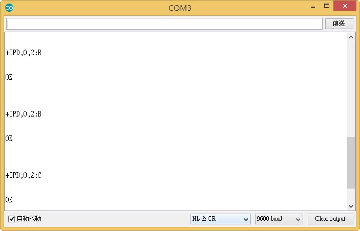

1.開啟Arduino,在程式碼輸入要連線的WIFIi帳號(ssid)及密碼(password)
2.與ESP8266接線與測試連線是否成功
3.打開Serial，取得IP位址
4.記下IP位址並打開Android App
5. 輸入IP位址並按下CONNECT鍵
6.連線成功時，Serial會出現Link的字樣，即可開始傳輸資料
7.每輸入一個字元都會藉由esp8266傳輸到arduino上
